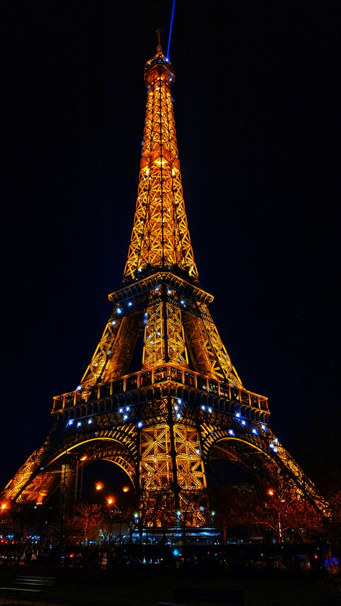
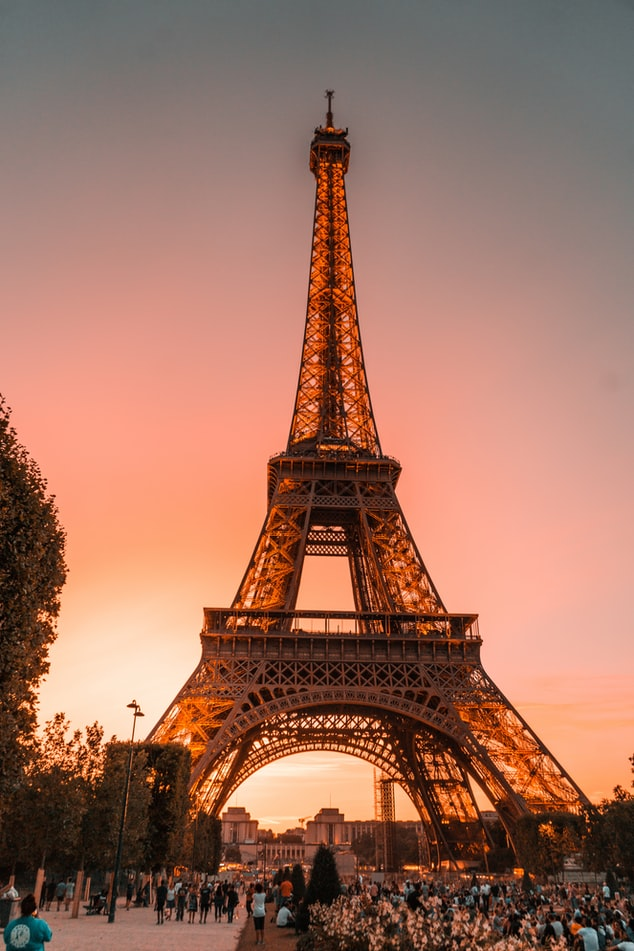
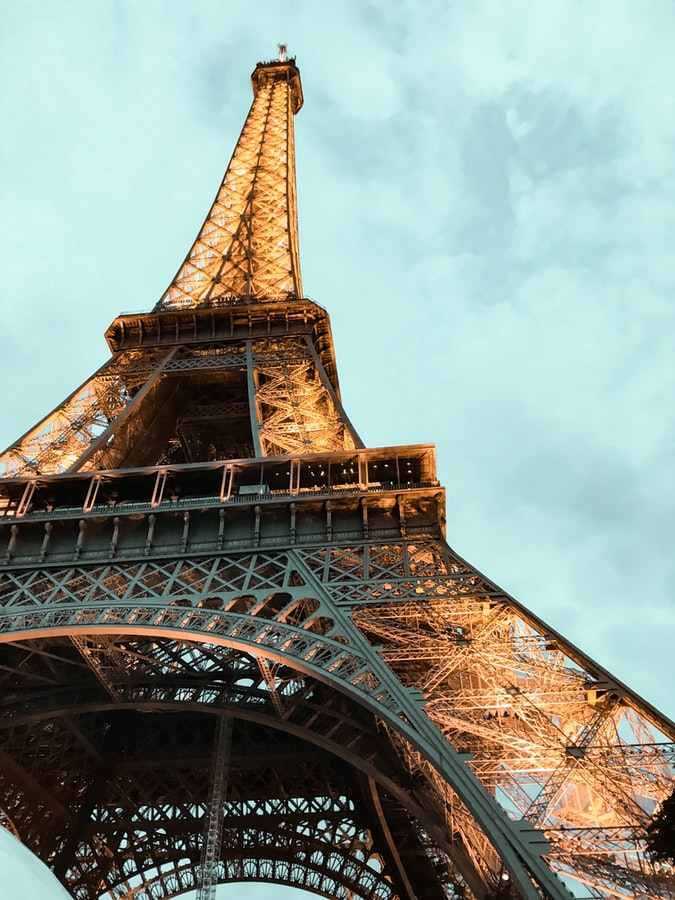

Eiffel Tower
In this page, you will get to know why I love Eiffel tower that's in Paris, France.
Introduction
The Eiffel Tower is a wrought-iron lattice tower on the Champ de Mars in Paris, France. It is named after the engineer Gustave Eiffel, whose company designed and built the tower.
Locally nicknamed "La dame de fer" (French for "Iron Lady"), it was constructed from 1887 to 1889 as the entrance to the 1889 World's Fair and was initially criticised by some of France's leading artists and intellectuals for its design, but it has become a global cultural icon of France and one of the most recognisable structures in the world. The Eiffel Tower is the most-visited paid monument in the world; 6.91 million people ascended it in 2015.
The tower is 324 metres (1,063 ft) tall, about the same height as an 81-storey building, and the tallest structure in Paris. Its base is square, measuring 125 metres (410 ft) on each side. During its construction, the Eiffel Tower surpassed the Washington Monument to become the tallest man-made structure in the world, a title it held for 41 years until the Chrysler Building in New York City was finished in 1930. It was the first structure in the world to surpass both the 200 meter and 300 meter mark in height. Due to the addition of a broadcasting aerial at the top of the tower in 1957, it is now taller than the Chrysler Building by 5.2 metres (17 ft). Excluding transmitters, the Eiffel Tower is the second tallest free-standing structure in France after the Millau Viaduct.
Introduction
The design of the Eiffel Tower is attributed to Maurice Koechlin and Émile Nouguier, two senior engineers working for the Compagnie des Établissements Eiffel.
It was envisioned after discussion about a suitable centrepiece for the proposed 1889 Exposition Universelle, a world's fair to celebrate the centennial of the French Revolution. Eiffel openly acknowledged that inspiration for a tower came from the Latting Observatory built in New York City in 1853.
In May 1884, working at home, Koechlin made a sketch of their idea, described by him as "a great pylon, consisting of four lattice girders standing apart at the base and coming together at the top, joined together by metal trusses at regular intervals".
Eiffel initially showed little enthusiasm, but he did approve further study, and the two engineers then asked Stephen Sauvestre, the head of company's architectural department, to contribute to the design. Sauvestre added decorative arches to the base of the tower, a glass pavilion to the first level, and other embellishments.
Photo Album
“Eiffel Tower”

Tallest in the world from 1889 to 1930, from the city of romance.



More sights in France
"Louvre Museum"

In a stately palace that was once a royal residence, the Louvre ranks among the top European collections of fine arts. Many of Western Civilization's most famous works are found here, including the Mona Lisa by Leonardo DaVinci, the Wedding Feast at Cana by Veronese, and the 1st-century-BC Venus de Milo sculpture. The collection owes its wealth to the contributions of various kings who lived in the Louvre. Other pieces were added as a result of France's treaties with the Vatican and the Republic of Venice, and from the spoils of Napoléon I.
"Palace of Versailles"

More than just a royal residence, Versailles was designed to show off the glory of the French monarchy. "Sun King" Louis XIV transformed his father's small hunting lodge into an opulent palace with a sumptuous Baroque interior. The palace became Louis XIV's symbol of absolute power and set the standard for princely courts in Europe.
"Côte d'Azur"

The most fashionable stretch of coastline in France, the Côte d'Azur extends from Saint-Tropez to Menton near the border with Italy. Côte d'Azur translates to "Coast of Blue," a fitting name to describe the Mediterranean's mesmerizing cerulean waters. To English speakers, this glamorous seaside destination is known as the French Riviera, words that have a ring of sun-drenched decadence.